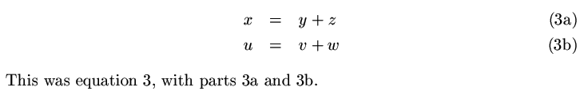

Pakiet udostêpnia polecenia umo¿liwiaj±ce zmianê sposobu numeracji
wzorów (¶rodowiska: equation i nowe ¶rodowisko
subeqnarray)
Je¿eli umie¶cimy kilka wzorów (¶rodowiska eqation) wewn±trz
¶rodowiska subequations, bêd± one numerowane licznikiem
podrzêdnym (bez zmiany w³a¶ciwego licznika wzorów) -- domy¶lnie licznik
podrzêdny jest reprezentowany jako kolejne, ma³e, litery alfabetu).
Pakiet jest bardziej intuicyjny (mniej skomplikowany, ale wystarczaj±cy)
w u¿yciu ni¿ pakiet subeqnarray
(p. tak¿e easyeqn i sublabel).
Przyk³ad:
\begin{subequations}
\label{db}
\begin{equation}
\label{db1}
d^2 + e^2 = f^2
\end{equation}
We can refer to
equation~\ref{db2}, \ref{db}
and~\ref{db1}.
\begin{equation}
\label{db2}
g^2 + h^2 = i^2
\end{equation}
\end{subequations}
Pakiet udostêpnia ¶rodowisko analogiczne do eqnarray --
ró¿ni±ce siê sposobem numerowania poszczególnych wierszy (domy¶lnie
jak w poprzednim przyk³adzie)
\begin{subeqnarray}
\label{dd}
x &=& y+z\label{dd1}\\
u &=& v+w\label{dd2}
\end{subeqnarray}
This was equation~\ref{dd}, with parts~\ref{dd1} and~\ref{dd2}.

Sposób prezentacji licznika mo¿emy zmieniæ, zmieniaj±c definicjê polecenia
\thesubequation (definicja licznika podstawowego jest
definiowana przez makroinstrukcjê \themainequation; któr± te¿
mo¿na zmieniæ) np:
\def\thesubequation{\themainequation-\alph{equation}}
definicjê tê nale¿y umie¶ciæ na zewn±trz ¶rodowisk zmieniaj±cych sposób
numeracji
\def\thesubequation{\themainequation-\alph{equation}}
\begin{subequations}
\label{db}
\begin{equation}
\label{db1}
d^2 + e^2 = f^2
\end{equation}
We can refer to equation~\ref{db2}, \ref{db} and~\ref{db1}.
\begin{equation}
\label{db2}
g^2 + h^2 = i^2
\end{equation}
\end{subequations}
Pakiet jest dostêpny pod adresem:
ftp://ftp.gust.org.pl/TeX/macros/latex/contrib/subeqn
 W³odzimierz Macewicz
W³odzimierz Macewicz